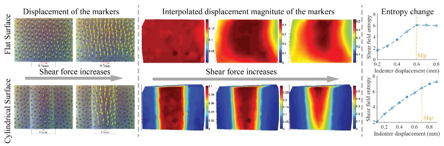

Touch, Grip and the Control of Dexterous Manipulation
Part of a series on sensorimotor neuroscience and robot learning: impedance · internal models · optimal feedback control · touch and grip · synergies and primitives · population dynamics.
Holding an object without crushing it or dropping it is a control problem the hand solves in a few hundred milliseconds, every time, with friction it cannot see. It does so by predicting load forces from the planned motion, by scaling grip to friction it senses at first touch, and by treating tactile events as the checkpoints of a manipulation plan. Robot hands now have the sensors to do the same.
1. Grip scales with friction, with a safety margin
For a two-finger pinch, the object slips when the tangential load exceeds what friction allows,
$$F_{\text{load}} \;\le\; 2\mu\, F_{\text{grip}} \quad\Longleftrightarrow\quad F_{\text{grip}} \;\ge\; \frac{F_{\text{load}}}{2\mu}.$$Johansson and Westling (1984) had subjects lift objects with surfaces of different friction and found that grip force was adjusted to the surface: higher for slippery surfaces, lower for rough ones, always with a modest margin above the slip limit. The adjustment relied on signals from the glabrous skin of the fingertips and on memory of previous lifts. Grip also rises together with load during the lift, rather than lagging behind it, which means it is driven by a prediction of the load, not only by feedback (Figure 1).
2. Manipulation as a sequence of contact events
Johansson and Flanagan (2009) review how tactile afferents in the fingertips encode the timing of contact, the direction and magnitude of forces, the shape of contact and surface friction. Their key idea is that a task such as lifting is organised into action phases (reach, load, lift, hold, replace, unload) whose boundaries are discrete mechanical events, each signalled by a burst of tactile activity. The brain predicts the sensory signature of each event; if the actual signal arrives early, late or differently, it triggers a corrective response and updates the memory used next time. Touch is less a continuous feedback channel than a stream of checkpoints.
3. Slip starts at the edge
Before an object slides, the contact passes through partial slip: the edges of the contact patch slip while the centre still sticks. Humans use these incipient slip signals to raise grip before gross slip occurs. A vision-based tactile sensor makes the same phenomenon visible on a robot (Figure 2).

4. What robot hands should borrow
- Feedforward grip from predicted load. If the planned motion implies an acceleration, the load force is known before it happens. Coupling grip to predicted load, with a margin over the estimated friction, is cheaper and safer than waiting for slip.
- Estimate friction at first contact. Humans set their grip from the first touch and from memory; a robot can estimate \(\mu\) from the onset of contact and update it across trials.
- Use incipient slip, not gross slip. Tactile sensors that resolve the contact patch can see partial slip at the edges before the object moves; that is the signal to react to.
- Phases and checkpoints. Treating contact events as transitions, with a predicted tactile signature for each, gives a learned policy natural places to check itself and recover, which end-to-end policies trained on vision usually lack.
References
| Reference | Venue |
|---|---|
| Johansson, Westling, Roles of glabrous skin receptors and sensorimotor memory in automatic control of precision grip when lifting rougher or more slippery objects | Exp. Brain Res. 56, 1984 |
| Johansson, Flanagan, Coding and use of tactile signals from the fingertips in object manipulation tasks | Nat. Rev. Neurosci. 10, 2009 |
| Yuan, Dong, Adelson, GelSight: high-resolution robot tactile sensors for estimating geometry and force | Sensors 17, 2017 |